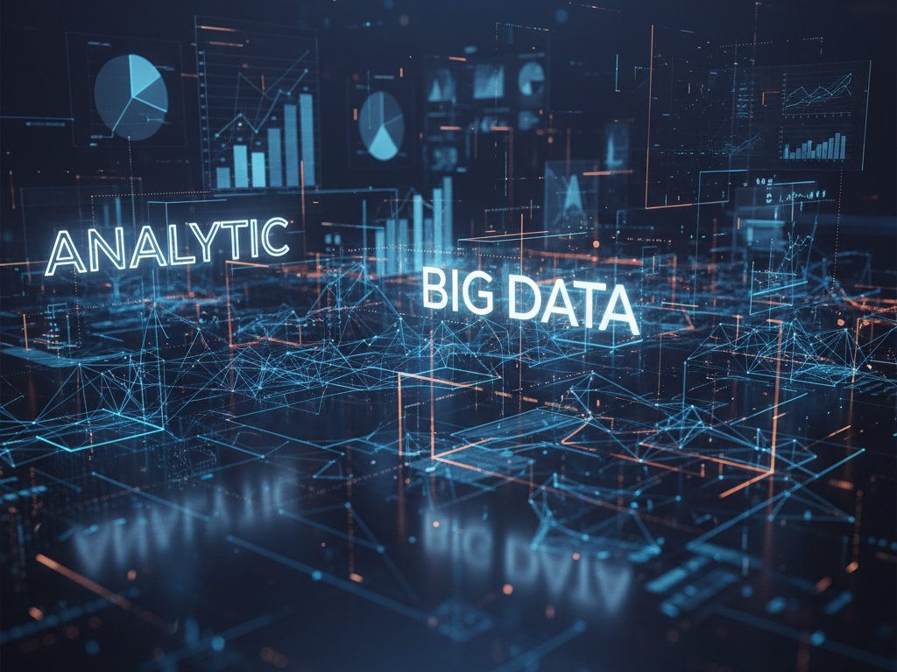

1. Pengantar
Di era digital seperti sekarang, hampir semua aktivitas manusia menghasilkan data — mulai dari belanja online, media sosial, penggunaan ponsel, hingga sensor pada kendaraan. Jumlah data yang dihasilkan setiap detik begitu besar dan terus meningkat tanpa henti.
Fenomena inilah yang dikenal dengan istilah Big Data.
Big Data bukan hanya tentang "banyaknya data", tetapi lebih kepada bagaimana data tersebut dikumpulkan, disimpan, dianalisis, dan dimanfaatkan untuk mengambil keputusan yang lebih cerdas.
Big Data adalah kumpulan data yang sangat besar dan kompleks sehingga tidak bisa diproses dengan sistem manajemen data tradisional.
2. Pengertian Big Data
Secara sederhana, Big Data adalah sekumpulan data dengan volume sangat besar, bervariasi, dan dihasilkan dengan kecepatan tinggi dari berbagai sumber.
Data ini bisa berupa teks, gambar, video, suara, hingga sinyal sensor yang dihasilkan dari berbagai perangkat digital.
Menurut SAP (2024), Big Data memiliki lima karakteristik utama yang dikenal dengan 5V, yaitu:
- Volume → jumlah data yang sangat besar.
- Velocity → kecepatan data dihasilkan dan diproses.
- Variety → beragam jenis dan format data (teks, gambar, video, sensor, log, dsb).
- Veracity → keakuratan dan keandalan data.
- Value → nilai atau manfaat yang bisa diperoleh dari analisis data.
(Sumber: sap.com)
Intinya, Big Data bukan hanya sekadar ukuran data, tetapi tentang kemampuan mengubah data besar menjadi informasi yang bernilai.
3. Bagaimana Cara Kerja Big Data?

Proses pengolahan Big Data umumnya melalui empat tahap utama:
a. Pengumpulan Data
Data dikumpulkan dari berbagai sumber seperti aplikasi mobile, media sosial, sensor IoT, sistem transaksi, dan mesin log.
Sumber data yang beragam ini membuat Big Data bersifat kompleks dan terus berkembang.
b. Penyimpanan Data
Data kemudian disimpan dalam infrastruktur berskala besar seperti cloud computing, data lake, atau sistem file terdistribusi (Hadoop, Spark, dsb).
c. Pemrosesan Data
Data yang telah dikumpulkan diproses agar bisa dianalisis. Tahap ini meliputi pembersihan data (data cleaning), penggabungan, dan transformasi agar data siap diolah.
d. Analisis dan Visualisasi
Tahap terakhir adalah analisis data menggunakan teknologi seperti Machine Learning, Artificial Intelligence (AI), dan Business Intelligence (BI) untuk menemukan pola, prediksi, serta insight yang bermanfaat.
Hasil akhirnya adalah informasi yang bisa digunakan untuk pengambilan keputusan strategis.
(Sumber: techtarget.com)
4. Manfaat Big Data dalam Berbagai Bidang

Big Data telah mengubah cara kerja banyak industri di seluruh dunia. Berikut contoh manfaatnya di berbagai sektor:
- 🏢 Bisnis dan Pemasaran
Big Data membantu perusahaan memahami perilaku pelanggan, menentukan strategi promosi, dan mempersonalisasi penawaran produk.
Contohnya, e-commerce seperti Tokopedia atau Shopee memanfaatkan analisis data pembelian untuk menampilkan rekomendasi produk yang relevan. - 🏥 Kesehatan (Healthtech)
Data rekam medis, hasil laboratorium, hingga pola hidup pasien dianalisis untuk mendeteksi penyakit lebih awal dan meningkatkan efektivitas pengobatan.
Rumah sakit kini banyak menggunakan sistem predictive analytics untuk memantau pasien secara real-time. - 🚗 Transportasi dan Logistik
Big Data digunakan untuk mengoptimalkan rute pengiriman, memantau lalu lintas, hingga memprediksi keterlambatan.
Perusahaan seperti Gojek dan Grab menerapkan analisis data untuk memetakan permintaan pelanggan di setiap wilayah. - 🏭 Industri dan Manufaktur
Dalam industri, Big Data membantu mendeteksi potensi kerusakan mesin lebih awal (predictive maintenance) dan meningkatkan efisiensi produksi. - 🏛️ Pemerintahan dan Smart City
Pemerintah menggunakan Big Data untuk membuat kebijakan berbasis data (data-driven policy), memantau bencana, serta mengembangkan sistem kota pintar (smart city) yang efisien dan ramah lingkungan.
5. Tantangan dalam Implementasi Big Data
Meski menjanjikan, penerapan Big Data juga memiliki beberapa tantangan besar:
- Integrasi Data: data berasal dari berbagai sistem yang sulit digabungkan.
- Kualitas Data: data yang tidak akurat bisa menghasilkan keputusan yang salah.
- Keamanan & Privasi: perlindungan data pribadi menjadi isu penting di era digital.
- Keterbatasan SDM: dibutuhkan data scientist dan analis yang memahami pengolahan data skala besar.
- Biaya Infrastruktur: menyimpan dan memproses data dalam jumlah besar membutuhkan teknologi dan biaya tinggi.
Tanpa strategi dan sumber daya yang tepat, Big Data bisa menjadi "beban", bukan aset.
(Sumber: atscale.com)
6. Tren Big Data di Tahun 2025
Perkembangan teknologi membuat Big Data semakin relevan dan canggih. Berikut beberapa tren yang sedang berkembang:
- Integrasi dengan Kecerdasan Buatan (AI).
- Real-Time Analytics: hasil analisis cepat untuk keputusan instan.
- Edge Computing: pemrosesan data langsung di perangkat IoT.
- Data-as-a-Service (DaaS): sewa layanan data tanpa infrastruktur besar.
- Privasi & Etika Data: kesadaran tinggi terhadap perlindungan data pribadi.
(Sumber: acceldata.io)
Masa depan Big Data akan semakin berfokus pada kecepatan, keamanan, dan efisiensi.
7. Kesimpulan
Data telah menjadi fondasi utama dalam transformasi digital di berbagai bidang.
Dengan kemampuan untuk mengolah dan menganalisis data berskala besar, organisasi dapat:
- Memahami pelanggan lebih baik,
- Mengoptimalkan operasional,
- Meningkatkan inovasi, dan
- Membuat keputusan berbasis data yang akurat.
Namun, tanpa manajemen data yang baik, privasi yang terjaga, dan sumber daya manusia yang kompeten, potensi Big Data tidak akan maksimal.
Kesuksesan Big Data bukan hanya bergantung pada teknologi, tapi juga pada strategi dan kesiapan manusia di baliknya.